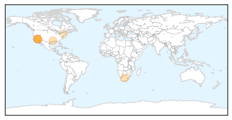
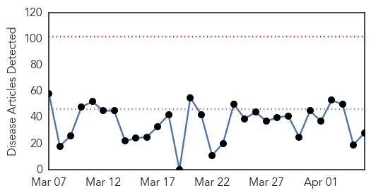
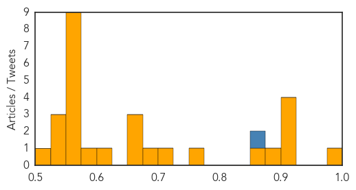

Meningitis
30-Day Web Trend
3 alerts, 0 warnings

30-Day Twitter Trend
1 alerts, 0 warnings

Article Locations
Article Confidences

Top Articles:
- 0.952
- WATCH: Three Dead from Meningitis in Los Angeles
- 0.919
- Gay men concerned after LA meningitis deaths
- 0.919
- Port Health Unit Opens at Aflao
- 0.916
- Many Gay Men Concerned After LA Meningitis Deaths « CBS Los Angeles
- 0.915
- Gay men concerned after LA meningitis deaths
- 0.738
- Meningitis kills three in Los Angeles County
- 0.656
- 3 Bacterial Meningitis Deaths In Los Angeles County
Top Tweets:
-
No tweets found for Apr 05, 2014
Unknown
30-Day Web Trend
0 alerts, 0 warnings

30-Day Twitter Trend
1 alerts, 0 warnings

Article Locations
Article Confidences
Top Articles:
- 0.998
- Lassa Fever Confirmed In Minnesota Traveler Returning From West Africa
- 0.917
- Chicago Tribune
- 0.917
- Chicago Tribune
- 0.917
- Chicago Tribune
- 0.910
- The world windows to Thailand
- 0.883
- HHS Secretary Kathleen Sebelius Announces National Minority Health Month, Aims To Achieve ‘Nation Free Of Disparities In Health Care’
- 0.869
- World Vision to reach thousands affected by Solomon Islands flash floods - Solomon Islands
- 0.758
- Drought worsens food crisis in poverty-stricken Haiti
- 0.717
- Drought worsens food crisis in poverty-stricken Haiti
- 0.689
- 12,000 affected by flooding in Solomon Islands’ capital
- 0.666
- UN warns of health crisis brewing in western Myanmar
- 0.661
- Authorities accused of undermining efforts to resume Arakan aid
- 0.660
- Authorities accused of undermining efforts to resume Arakan aid - Myanmar
- 0.610
- Hospital studies vaccine for superbug
- 0.583
- Dog Shelters Taking Extra Precaution Against Deadly Virus
- 0.574
- Video: Central African Christians hail pullout of Chad soldiers
- 0.569
- Lack of aid in Myanmar's Rakhine state reaches critical stage ucanews.com
- 0.569
- Vivendi accepts €17 billion Numericable offer for SFR
- 0.569
- Video: Rwandan ‘Romeo and Juliet’ put genocide behind them
- 0.569
- Rwandan president renews claims that France aided genocide
- 0.569
- 'Signal found' by ship searching for missing Malaysian plane
- 0.569
- Spanish migrant Hidalgo becomes first woman mayor of Paris
- 0.569
- France snubs Rwandan genocide commemorations
- 0.569
- Hollande’s ex-partner Ségolène Royal joins new French cabinet
- 0.543
- Call for Russia to ban McDonald’s as chain closes Crimea branches
- 0.537
- ABQ students sent home with Norovirus warning
- 0.529
- Health 4 Haiti helps those in need
- 0.501
- States revolt against powerful new painkiller
Top Tweets:
- 0.866
- Thats Dr. Virus Nerd to you